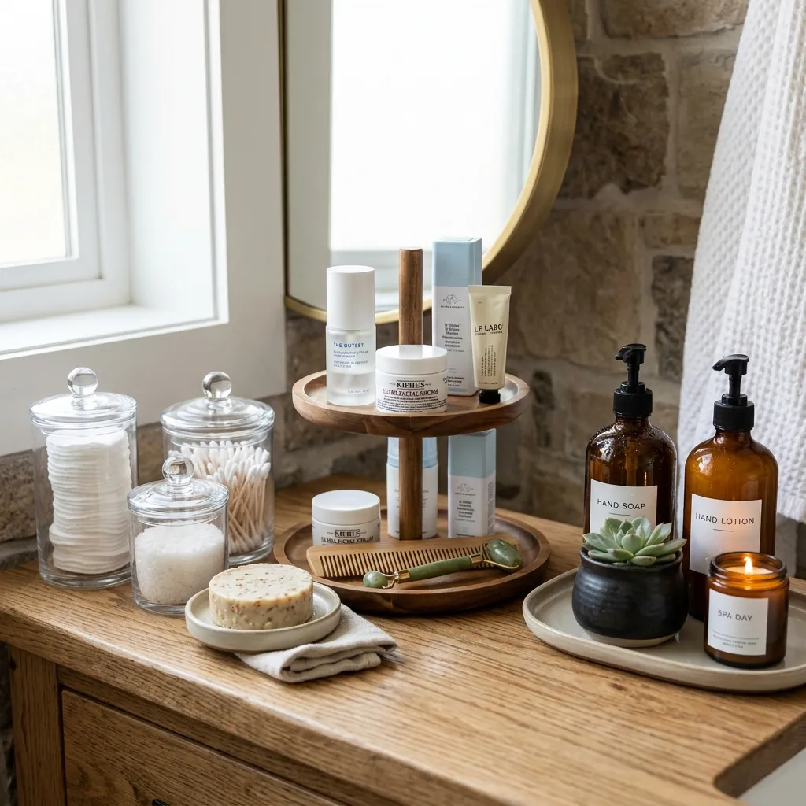
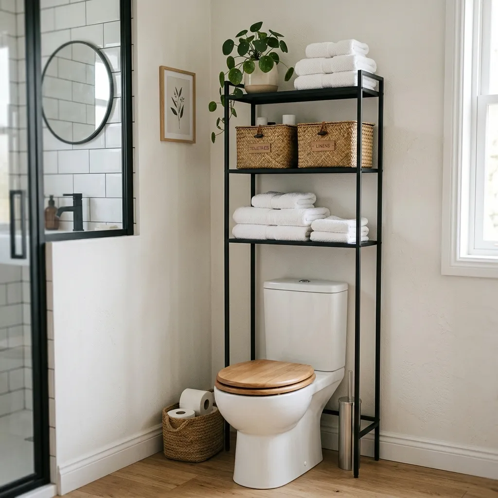
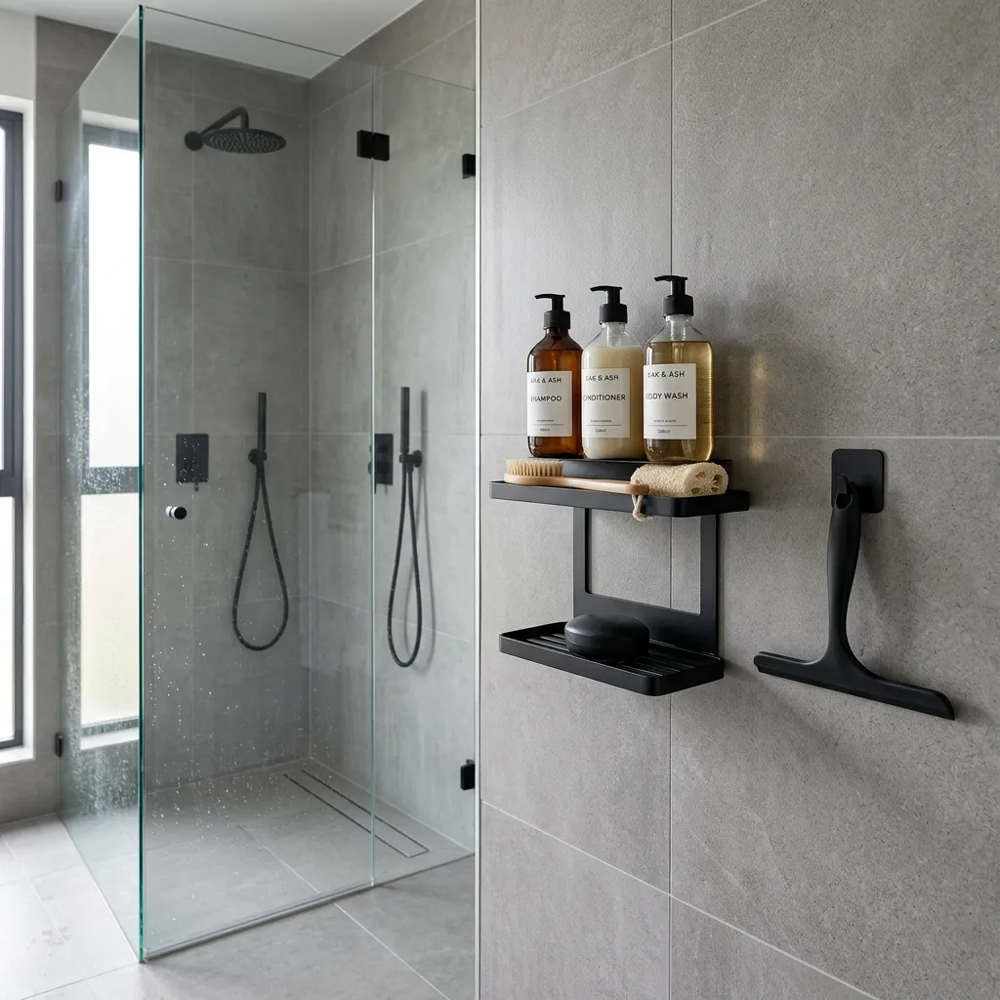
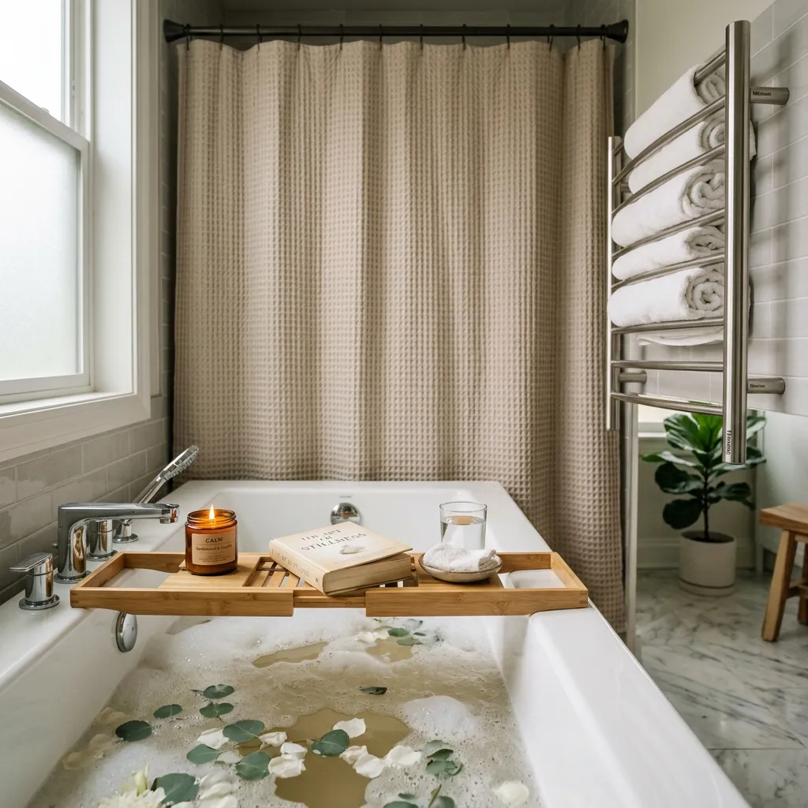

How to Organize a Small Bathroom Like a Luxury Spa
Transform your tiny bathroom into a luxury spa. Discover aesthetic organization hacks, smart storage solutions, and minimalist decor ideas.
Your bathroom is the first room you visit in the morning and the last room you see before going to sleep. It sets the tone for your entire day. If it is cluttered with half-empty shampoo bottles, chaotic skincare products, and damp towels, your mind will feel equally cluttered.
When you walk into a luxury spa or a five-star hotel bathroom, the square footage is rarely what makes it feel expensive. It is the intentionality. The lack of visual noise. The way every item serves a purpose and is presented beautifully.
You do not need a massive renovation or a freestanding marble tub to achieve this feeling. By changing how you organize and display your daily essentials, you can transform even the tiniest rental bathroom into a serene, high-end sanctuary.
Here is your complete guide to organizing a small bathroom like a luxury spa.

Step 1: The Aesthetic Vanity
The vanity sink is the most used surface in your bathroom, which means it is the easiest place for clutter to accumulate. The secret to a spa vanity is decanting.

Stop leaving brightly colored, branded plastic bottles of hand soap and lotion on your sink. Swap them for matching amber glass dispensers. This single swap instantly makes your bathroom look incredibly expensive.
For your daily essentials like cotton pads, Q-tips, and bath salts, throw away the plastic bags. Store them in clear acrylic apothecary jars. They look beautiful on the counter and make it easy to see when you need a refill. Group these jars and your daily skincare on a tiered wooden tray to keep the counter looking tidy and intentional.
- The Jars: Clear Acrylic Apothecary Jars Set
Step 2: Smart Vertical Storage
In a small bathroom, floor space is nonexistent. You must build up. The space above the toilet is the most underutilized area in a bathroom.

Install a sleek, minimalist over-the-toilet space saver shelf. Avoid bulky, closed cabinets that can make the room feel cramped. An open, airy shelf provides massive amounts of storage without blocking the light.
However, open shelving requires discipline. You cannot just throw extra toilet paper rolls and messy hair tools on it. Use woven seagrass storage baskets to hide the "ugly" items. The natural texture of the seagrass warms up the cold tiles and ceramics of the bathroom, adding to that earthy spa vibe.
Recommended: Woven Seagrass Storage Baskets Set
Step 3: A Clutter-Free Shower
A shower floor covered in six different shampoo bottles and a tangled loofah is the opposite of relaxing. If you want a luxury shower, you need everything off the floor.

If you are renting, or simply don't want to drill into your beautiful tiles, use adhesive shower caddy shelves. Opt for matte black to give the shower a sleek, modern edge. Keep only the bottles you use every single day in the shower; store the rest in your vanity or baskets.
To keep the spa feeling alive, you must keep the glass pristine. A simple, matte black silicone shower squeegee hung neatly inside the shower encourages you to wipe down the glass after every use, preventing hard water stains and keeping the aesthetic intact.
Step 4: The Spa Tub Experience
If you have a bathtub, you have the ultimate spa tool. But it needs to be styled properly to invite relaxation.

A bamboo bathtub caddy tray stretching across the tub is the ultimate luxury flex. It provides a dedicated spot for a candle, a book, or a glass of wine, turning a simple bath into a curated ritual.
If you have a shower/tub combo, ditch the cheap plastic shower curtain liner. Invest in a heavy, luxury waffle weave shower curtain in a neutral tone. The rich texture makes the bathroom feel like a high-end hotel.
Recommended: Luxury Waffle Weave Shower Curtain Neutral
And finally, for the ultimate spa upgrade: a wall-mounted electric towel warmer. Stepping out of the shower and wrapping yourself in a perfectly warmed towel is a luxury you will never want to live without again.
Final Thoughts: A Sanctuary, Not Just a Room
Creating a spa-like bathroom isn't about spending thousands of dollars on renovations. It is about intentionally choosing beautiful organization, hiding the visual noise, and adding small touches of luxury to your daily routines. Take the time to curate your space, and your mornings will never feel rushed or chaotic again.